Cátedra 14: Ensemble Canónico y Termodinámica
Cómo derivar las variables termodinámicas — $S$, $p$, $\mu$ — directamente de la energía libre de Helmholtz $F = -k_BT\ln Z$, cerrando el puente entre mecánica estadística y termodinámica clásica.
Temas que cubre
- Energía libre de Helmholtz $F(T,V,N) = -k_BT\ln Z$: potencial natural del ensemble canónico
- Derivación de $S$, $p$ y $\mu$ como derivadas de $F$
- Relaciones de Maxwell: igualdad de derivadas cruzadas de $F$
- Gas ideal canónico: $Z_N = Z_1^N/N!$, función de partición de una partícula $Z_1 = V/\lambda_{th}^3$
- Aplicación: calor específico del gas ideal desde $\langle E \rangle$
- Condiciones de equilibrio entre dos sistemas en contacto térmico
Conceptos clave
Energía libre de Helmholtz $F$
$F = U - TS$ es el potencial termodinámico con variables naturales $T$, $V$, $N$. En el ensemble canónico $F = -k_BT\ln Z$, de modo que toda la termodinámica se extrae derivando $\ln Z$. $F$ es mínima en el equilibrio a $T$, $V$, $N$ fijos.
Relaciones de Maxwell de $F$
Como $dF = -S\,dT - p\,dV + \mu\,dN$ es diferencial exacto, las derivadas cruzadas son iguales: $(\partial S/\partial V)_T = (\partial p/\partial T)_V$. Esta identidad relaciona la expansión térmica con la dependencia de la entropía en el volumen.
Gas ideal: longitud de onda térmica
$\lambda_{th} = h/\sqrt{2\pi m k_BT}$ es la longitud de onda de de Broglie térmica. $Z_1 = V/\lambda_{th}^3$: cuando $V/N \gg \lambda_{th}^3$ el sistema es clásico (las funciones de onda no se solapan).
Potencial químico $\mu$
$\mu = (\partial F/\partial N)_{T,V}$ es el costo en energía libre de agregar una partícula. Para el gas ideal: $\mu = k_BT\ln(N\lambda_{th}^3/V) < 0$ a densidades bajas. En el equilibrio entre fases, $\mu$ es el mismo en ambas fases.
Fórmulas fundamentales



Qué hay que entender
- El ensemble canónico es el más usado en la práctica porque las condiciones $T$, $V$, $N$ fijos se corresponden con experimentos de laboratorio reales (baño térmico).
- La entropía de Sackur-Tetrode $S = Nk_B[5/2 - \ln(N\lambda_{th}^3/V)]$ es exactamente extensiva gracias al $N!$ en el denominador de $Z_N$ — esto resuelve la paradoja de Gibbs.
- Las relaciones de Maxwell son consecuencia directa de que $F$ es una función de estado (diferencial exacto). Son herramientas potentes porque conectan cantidades que parecen independientes.
- A altas temperaturas o bajas densidades ($N\lambda_{th}^3/V \ll 1$), el gas cuántico se comporta como gas clásico: el ensemble canónico y el de Maxwell-Boltzmann coinciden.